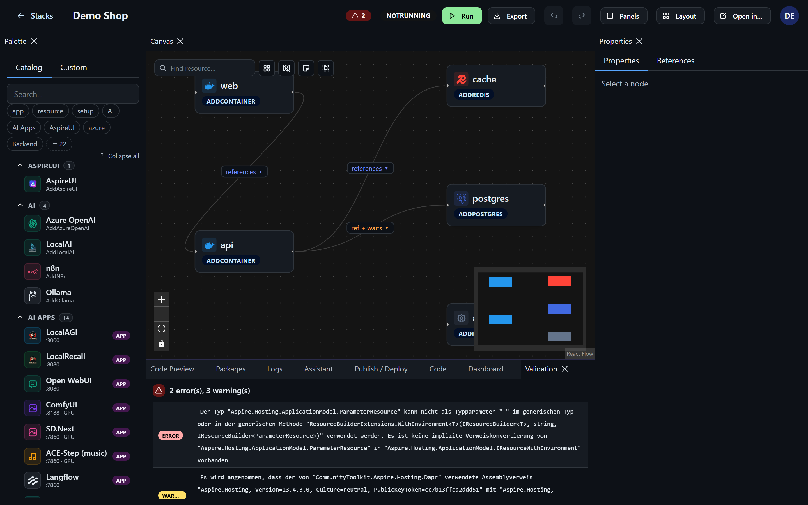
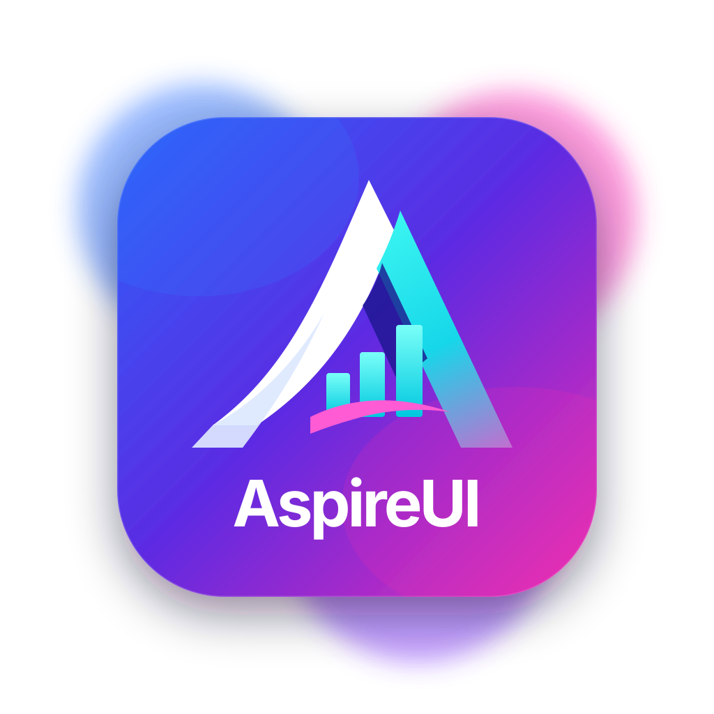
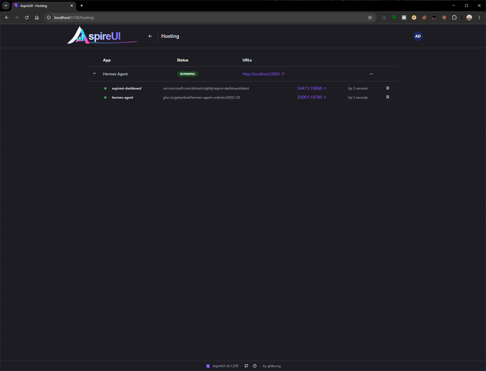
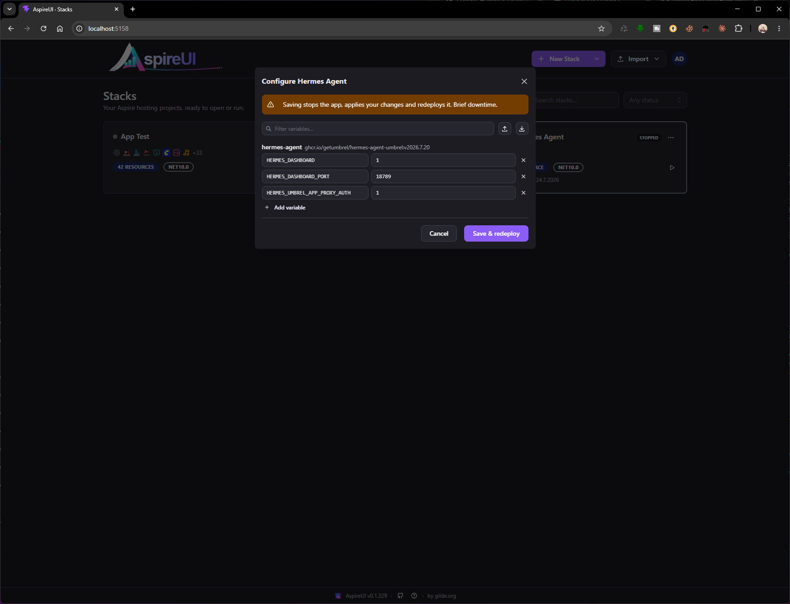
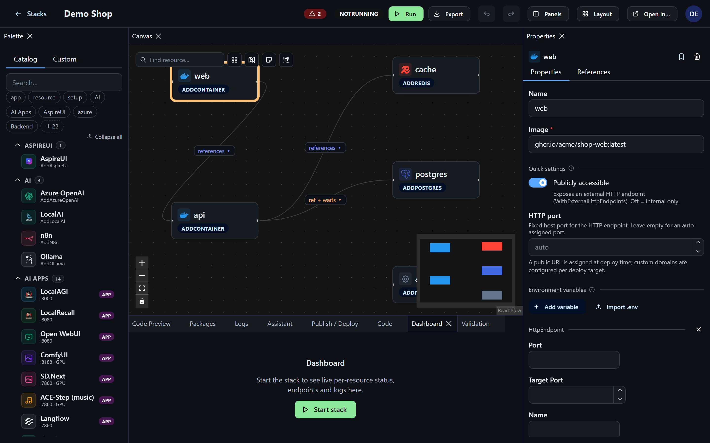
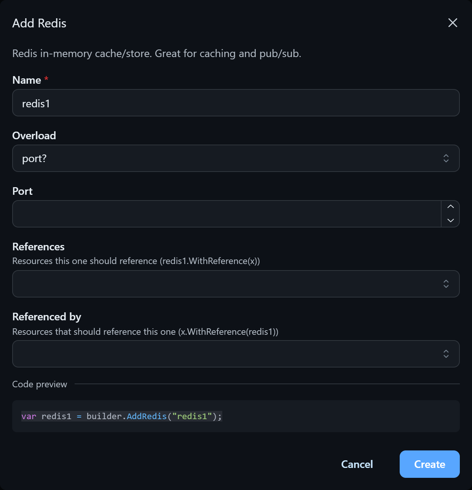
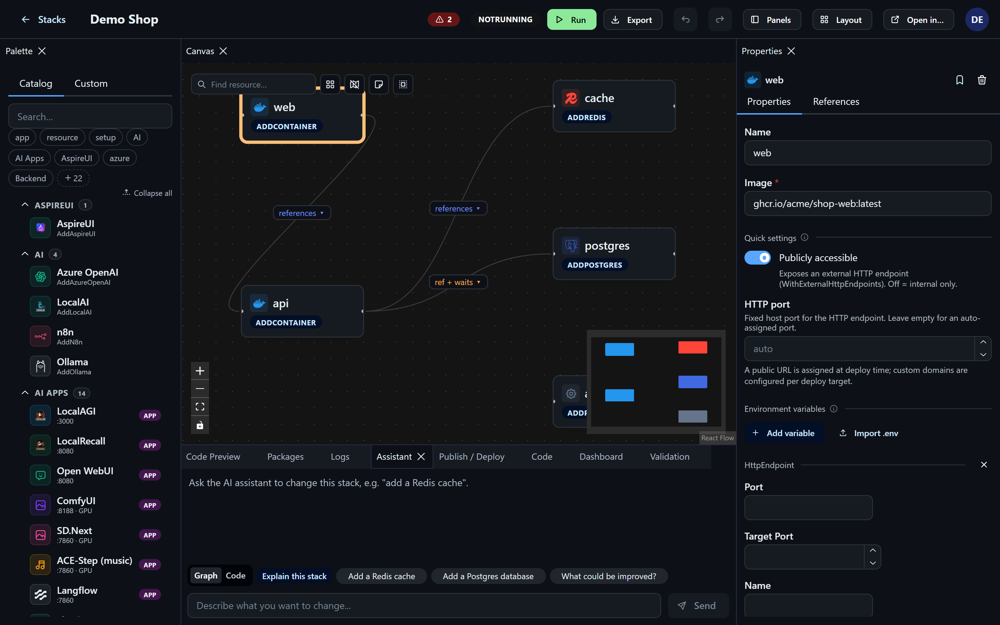

.NET Aspire · visual · open source
.NET Aspire · visual · open source
Build, run & host Aspire by dragging, not typing.
AspireUI is a visual canvas for .NET Aspire. Drag out resources and wire references, or edit real C# with Roslyn IntelliSense — both stay in sync. Run a stack and watch live per-resource status, publish to Docker Compose, Kubernetes, Bicep or an Aspire manifest, and even host apps like an app store, with 139+ ready-made containers.

The visual companion to aspire.love
aspire.love frees your Lovable project into a .NET Aspire solution. AspireUI is where you compose, run and host Aspire stacks visually — same ecosystem, no hand-written AppHost required.
One canvas, the whole lifecycle
Visual canvas
Drag resources onto the canvas and wire references in both directions. No boilerplate, no blank Program.cs to stare at.
Reflection-driven catalog
The "add resource" dialog is built from an intelligent capability catalog — new Aspire integrations show up automatically, and composite "Setup" macros wire several resources at once.
Real C# editor
A Monaco editor with Roslyn-backed IntelliSense shows the live Program.cs. Edit the code and it re-parses straight back into the graph.
Live resources & logs
While a stack runs, the canvas shows real per-resource status, endpoint URLs and the child resources each builder spawns — with per-resource console-log streaming.
Run & dashboard
Start and stop a stack from the UI and jump straight into the .NET Aspire dashboard.
Publish anywhere
Publish via aspire publish to Docker Compose, Kubernetes (Helm), Azure Bicep or an Aspire manifest — view the artifact, download the bundle, or deploy Compose locally.
Hosting — install & forget
Deploy a stack as a persistent, tracked appliance with its own URL: start, stop, update and back it up from one place.
139+ app store
A one-click app store (Umbrel / CasaOS style) with 139+ preconfigured containers — Immich, Jellyfin, Nextcloud, Gitea, n8n, Pi-hole and more.
Import what you have
Bring in an existing AppHost from .cs, .csproj, a .zip — or a docker-compose.yml.
Built-in AI assistant
Describe what you want and let the assistant build or modify the stack (bring your own OpenAI-compatible endpoint).
Made to live in
Themes, a command palette (Ctrl/⌘+K), saveable dock layouts, undo/redo and dockable panels — arrange the workspace your way.
API-first
The whole product is a REST API with an OpenAPI spec and a browsable Scalar reference — automate everything.

Not just build — hostAspireUI turns any stack into a self-hosted appliance. Install it once, get a URL, and manage it like an app on your own box — no YAML archaeology, no manual container juggling.


One-click app store
Umbrel/CasaOS-style store — pick an app, click install, it's running.
139+ apps ready
Immich, Jellyfin, Nextcloud, Gitea, n8n, Pi-hole… drop them on the canvas or install from the store.
Install & forget
Persistent, tracked, updatable appliances with backups — set it and move on.
See it in action




Run it yourself
Open source and self-hosted. One-click deploy to Azure, Render or Google Cloud to try it — or run the prebuilt image on any Docker host for the full Run & Hosting features.
Self-hosting needs Docker (plus the .NET SDK 10.0+ for local dev). Run & Hosting need the Docker socket.
# fastest — pull & run the prebuilt image (opens http://localhost:8080)
$ docker run -d --name aspireui -p 8080:8080 \
-v aspireui-data:/data -v /var/run/docker.sock:/var/run/docker.sock \
ghcr.io/fgilde/aspireui:latest
# or local dev with the .NET SDK (opens http://localhost:5158)
$ dotnet run --project src/AspireUI.Server